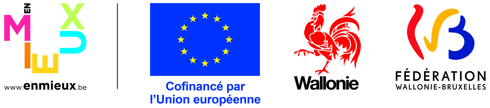

Research Project · UCLouvain · ICTEAM
Clinom-X
A decentralized IT infrastructure for secure management of clinomic data for biomedical research.
Clinom-X builds a modern, secure IT infrastructure enabling decentralized management of multimodal clinomic data — combining clinical, biological, behavioural, neurophysiological, anatomopathological, multi-omic, and imaging data — to give authorized researchers access to de-identified hospital datasets.
About the Project
More and more biomedical data is being generated and collected from large biobanks, electronic medical records, imaging devices, sensors and multiple wearables. At the same time, the cost of investigating "omics" such as the genome, microbiome or metabolome is steadily falling, heralding the massive availability of such data in the near future.
Fundamental and applied research on clinical data today faces the difficulty of providing access, from outside a hospital, to structured and de-identified data sets concerning a cohort of patients. Clinom-X addresses this challenge by creating an IT infrastructure for decentralized management of clinomic data for research, built on modern, secure IT standards.
"By clinomic data we mean the multimodal combination of clinical, biological, behavioural, neurophysiological, anatomopathological, multi-omic, and imaging data."
This infrastructure serves as a technological foundation to give authorized external access to hospital datasets. Other projects related to a particular medical discipline — especially those aiming to exploit these data for analysis or artificial intelligence — can rely on Clinom-X as their technological base, notably within the MedReSyst portfolio.
Objectives
Decentralized Data Infrastructure
Create a secure, standards-based IT infrastructure for decentralized collection and management of multimodal clinomic research datasets across hospital services.
Secure External Access
Enable authorized researchers from universities and corporate R&D units to access de-identified hospital data through rigorous legal and ethical validation.
Hospital Dashboard
Provide a unified dashboard at the hospital level offering a single view of all datasets collected by various hospital services.
Foundation for AI & Analysis
Serve as the technological base for discipline-specific projects exploiting clinomic data for analysis and artificial intelligence, notably within the MedReSyst portfolio.
Recent Events
20 Nov 2025
BNAIC/BeNeLearn 2025
Presentation on how 1980s AI methods meet modern medical databases to reach and outperform the state of the art in clinical diagnosis of rare diseases.
Milestone06 Oct 2025
COST Action CA24161
First Management Committee meeting, in connection with the integration of neurophysiological data (EEG) into the Clinom-X platform.
Conference22 May 2025
ICTEAM Day — Poster & Presentation
Poster on the use of ontologies and knowledge graphs in rare disease diagnostic decision support.
Lead Institution
Funding Partners
